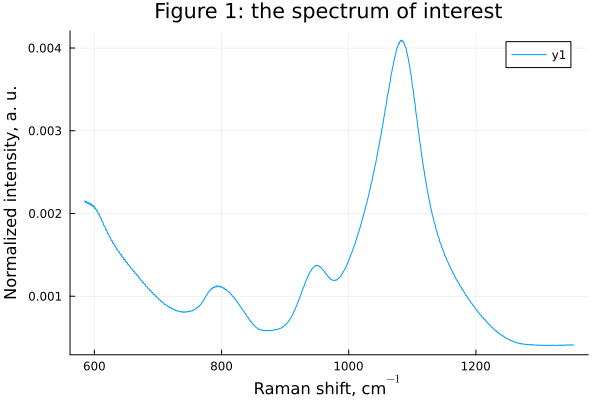
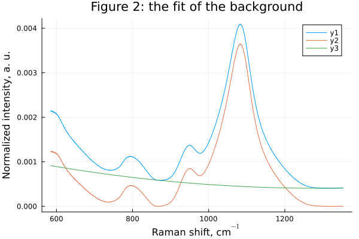
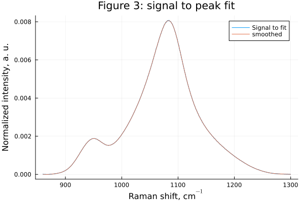
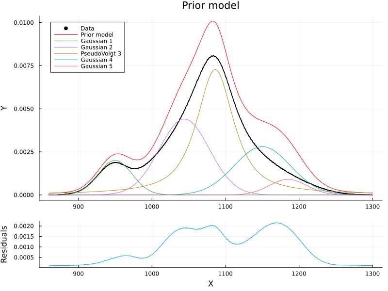
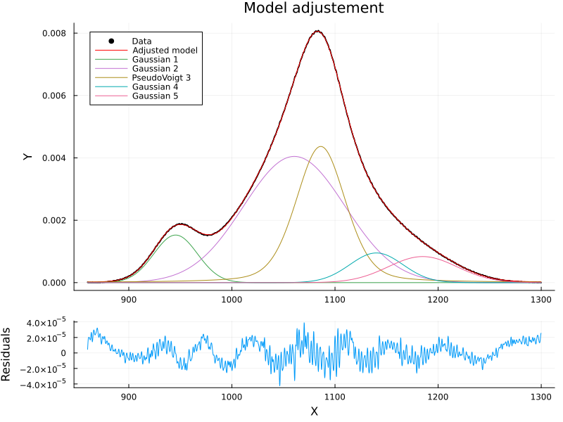
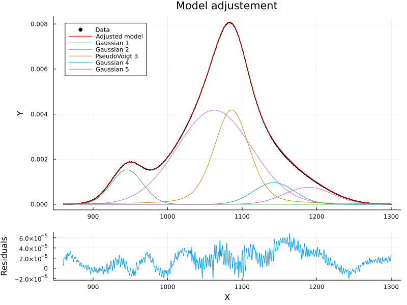

The source files for all examples can be found in /examples.
Peak fitting the Raman spectrum of a glass
Code by Charles Le Losq, Created 7 April 2015 for Python, Modified 30 Sept. 2016 for Julia, updated February 2019, then April 2025.
Last modified: April 2025 for release of Spectra v2.0.0.
Glass materials usually present broad bands due to their inherent structural disorder. Due to this, peak-fitting Raman spectra of glasses is informative but difficult, and requires a careful balance between model freedom and constraints. Using boundaries for parameters can help, as well as setting priors on model parameters and working in a Bayesian framework. Spectra provides a function to do such things, fit_peaks.
Here, we will fit a Raman spectrum of a glass with Julia, using the fit_peaks function now available in Spectra. We will leverage the quasi-Newton method, with a loss function that takes into account data and prior model errors. In other terms, we are setting ourselves in a Bayesian framework, with priors on the model parameters.
You could solve the following problem in a pure Bayesian approach, using e.g. HMC algorithm in Turing.jl. However, it takes some time... The quasi-Newton method is clean, the Julia code is the direct transcription of the mathematical formulas available in Tarantola (2005), chapter 3. This method is fast, accurate, but sometimes a bit instable. You can also use the Interior Point Newton algorithm from Optim.jl, by setting the backend to :Optim. It is good, stable but slightly slower. It also benefits from boundaries!
Context
In this example, we fit the 850-1300 cm$^{-1}$ portion of a Raman spectrum of a lithium tetrasilicate glass Li$_2$Si$_4$O$_9$, the name will be abbreviated LS4 in the following.
For further references for fitting Raman spectra of glasses, please see for instance:
- Virgo et al., 1980, Science 208, p 1371-1373;
- Mysen et al., 1982, American Mineralogist 67, p 686-695;
- McMillan, 1984, American Mineralogist 69, p 622-644; Mysen, 1990, American Mineralogist 75, p 120-134;
- Le Losq et al., 2014, Geochimica et Cosmochimica Acta 126, p 495-517
- Le Losq et al., 2015, Progress in Earth and Planetary Sciences 2:22.
fit_peaks is meant to fit a single spectrum. You could do a loop to fit several spectra, but if you want to define global models, I invite you to use the JuMP framework or, if you fancy Bayesian MCMC methods, Turing.jl
Importing libraries and data
First, we import the libraries for doing various things:
using Spectra ## our Spectra library
using Statistics ## to have access to core functions like mean() or std()
using DelimitedFiles ## to import the data
# Plotting libraries
using Plots ## to make plots
gr() ## Plots backend
using LaTeXStrings ## LaTeX for superscripts/subscripts in labels, captions...Importing data
For that, we use readdlm from DelimitedFiles.
# get the spectrum, with skipping header and footer comment lines from the spectrometer
data = readdlm(joinpath(@__DIR__, "data/LS4.txt"), '\t', Float64)
# To skip header and footer lines
skip_header = 23
skip_footer = 121
inputsp = zeros(size(data)[1]-skip_header-skip_footer,2)
j = 1
for i = skip_header+1:size(data)[1]-skip_footer
inputsp[j,1] = Float64(data[i,1])
inputsp[j,2] = Float64(data[i,2])
global j += 1
endWe will now make the following pre-processing: we correct the data from temperature and excitation line effects using the tlcorrection function. It is not always necessary at frequencies > 500 cm-1, but this is just for the sack of example in the present case
x, y, ese_y = tlcorrection(inputsp, 23.0, 490.0)([584.8513, 585.0513, 585.2513, 585.4513, 585.6513, 585.8513, 586.0513, 586.2513, 586.4513, 586.6513 … 1351.6512, 1351.8513, 1352.0513, 1352.2513, 1352.4513, 1352.6512, 1352.8513, 1353.0513, 1353.2513, 1353.4513], [0.002152145651254479, 0.002149300613068526, 0.0021457338996192315, 0.0021417631435398624, 0.002137780663110672, 0.002134364858870799, 0.0021321099907604564, 0.002131641055113538, 0.0021333985152228083, 0.0021368058863904253 … 0.00040897094350943604, 0.0004082655479337475, 0.0004084222446453181, 0.00040902726920146295, 0.0004096665011636359, 0.0004101231280126589, 0.0004104694406433908, 0.000410805190987191, 0.00041121122445985416, 0.00041167269199465984], [1.2619050364402098e-5, 1.261349674616636e-5, 1.2605813720811051e-5, 1.259692870090874e-5, 1.258799266954953e-5, 1.2580710236994312e-5, 1.2576839314553725e-5, 1.2578231688318044e-5, 1.2586191928015794e-5, 1.2599016849624009e-5 … 9.31882014197006e-6, 9.311671180523136e-6, 9.314348759429777e-6, 9.32213663503718e-6, 9.330310260683871e-6, 9.33640087203318e-6, 9.341235304943654e-6, 9.345948214828419e-6, 9.351459470661644e-6, 9.357599356847322e-6])and now we create a new plot for showing the spectrum
plot(x, y,
xlabel=L"Raman shift, cm$^{-1}$",
ylabel="Normalized intensity, a. u.",
title="Figure 1: the spectrum of interest")
So we are looking at the 500-1300 cm$^{-1}$ portion of the Raman spectrum of the glass. We see a peak near 800 cm$^{-1}$, and two others near 950 and 1085 cm$^{-1}$. We will be interested in fitting the 870-1300 cm$^{-1}$ portion of this spectrum, which can be assigned to the various symmetric and assymetric stretching vibrations of Si-O bonds in the SiO$_2$ tetrahedra present in the glass network (see the above cited litterature for details).
Baseline Removal
First thing we notice in Fig. 1, we have to remove a baseline because this spectrum is shifted from 0 by some "background" scattering. This quite typical in Raman spectra of glasses. Several ways exist to do so. We're going to the simplest thing: a polynomial fitting the signal base around 870 and 1300 cm$^{-1}$. Other reasonnable solutions include a linear function, and a constant function. The two latter can be fitted between 1300 and 1350 cm$^{-1}$, but we will need to add another peak around 800 cm$^{-1}$. For now, the example is done with fitting the 870 cm$^{-1}$ portion of spectra, as this usually results in more robust final results.
First, we define the regions of interest roi where we think the baseline is:
roi = [860.0 870.0; 1300.0 1400.0]
# We now call the `baseline` function to define the baseline and subtract it from `y`:
y_corr, y_bas = baseline(x, y, roi=roi, method="polynomial", polynomial_order=2)
# To visualize this, we create a plot showing the baseline:
plot(x, [y y_corr y_bas],
xlabel=L"Raman shift, cm$^{-1}$",
ylabel="Normalized intensity, a. u.",
title="Figure 2: the fit of the background")
Signal extraction and normalisation
Now we will get the portion of the spectrum we want to fit using extract_signal. Then we normalise the signal using normalise. We will calculate the errors based on the comparison between the signal and its "smoothed version", provided by smooth.
# First we extract the signal we want to fit
x_fit, y_fit, _ = extract_signal(x, y_corr, [860. 1300.])
# We normalise y_fit so that its area is 1
y_fit = normalise(y_fit; x=x_fit, method="area")
# We smoothed the signal and get an estimate of the errors using it.
y_fit_perfect = smooth(x_fit, y_fit, method="whittaker", lambda=1e2)
ese_y_fit = sqrt.(mean((y_fit_perfect-y_fit).^2)) * ones(size(y_fit_perfect))
# Let's have a look at the signal in the fitting region
plot(x_fit, y_fit, label="Signal to fit")
plot!(x_fit, y_fit_perfect, label="smoothed",
xlabel=L"Raman shift, cm$^{-1}$",
ylabel="Normalized intensity, a. u.",
title="Figure 3: signal to peak fit")
Fitting the spectrum
We do the fit using the fit_peaks function with the quasi-Newton algorithm. From the litterature, we have five peaks (see Le Losq et al. 2014, 2015 and references therein). Compared to earlier studies, we also now know that the main one near 1080 cm$^-1$ may be actually a pseudovoigt peak.
Here we will place a strong prior on the intensity of the peak near 1090 cm$^-1$. It seems even a bit unrealistic but the influence of the prior loss compared to the data loss is somehow small, so if you want to add tight constraints you sometime need to place low uncertainties on the prior values of the parameters you want to constrain. Here we assume that the central band should be fit by a peak with a strong intensity. We use a 1 \% prior uncertainty on a prior value that actually is 10 \% lower than the maximum intensity:
max_y = maximum(y_fit)
prior_main_peak = max_y-0.1*max_y
prior_main_peak_uncertainty = 0.01*prior_main_peak7.27329821140079e-5Let's implement that in a peaks_info vector of peak parameters, uncertainties and boundaries.
Then we declare the context and have a look at the prior mode. If necessary we re-adjust it. Keep in mind that it should be fairly close to the solution, as the algorithms (here the quasi-Newton method) we use are local search algorithms.
peaks_info = [
# (type, initial_params, uncertainties, lower_bounds, upper_bounds)
(:gaussian, [0.002, 950, 27], [0.0005, 5.0,3.0], [0.0, 0.0, 0.0], [Inf, Inf, 60.0]),
(:gaussian, [0.0044, 1044, 40], [0.0005, 5.0, 3.0], [0.0, 0.0, 0.0], [Inf, Inf, 60.0]),
(:pseudovoigt, [prior_main_peak, 1086, 30., 0.8], [prior_main_peak_uncertainty, 5.0, 3.0, 0.02], [0.0, 0.0, 0.0, 0.0], [Inf, Inf, 60.0, 1.0]),
(:gaussian, [0.0028, 1150, 45], [0.0005, 5.0, 3.0], [0.0, 0.0, 0.0], [Inf, Inf, 60.0]),
(:gaussian, [0.0009, 1185, 30], [0.0001, 5.0, 3.0], [0.0, 0.0, 0.0], [Inf, Inf, 60.0]),
]
# we declare the context of the fit
ctx = prepare_context(x_fit, y_fit, peaks_info, ese_y_fit)
# We plot the prior model
p = plot_fit(ctx, title="Prior model")No result provided, plotting the prior...
# doing the fit
result = fit_peaks(ctx, backend=:Optim, relax=5, maxiter=100)
# we print the result using
print_params(result.peak_results)
# and we plot the fit
plot_fit(ctx, result.peak_results)Peak 1 (gaussian):
amplitude: 0.0015255 ± 2.0e-6
center: 945.449 ± 0.019
width: 24.911 ± 0.024
area: 0.0809 ± 0.00017
Peak 2 (gaussian):
amplitude: 0.004047 ± 2.4e-5
center: 1060.53 ± 0.47
width: 57.91 ± 0.25
area: 0.499 ± 0.005
Peak 3 (pseudovoigt):
amplitude: 0.004367 ± 3.7e-5
center: 1086.163 ± 0.041
width: 28.323 ± 0.062
fraction: 0.2797 ± 0.004
area: 0.2984 ± 0.003
Peak 4 (gaussian):
amplitude: 0.000951 ± 3.3e-5
center: 1140.14 ± 0.35
width: 30.32 ± 0.35
area: 0.0614 ± 0.0027
Peak 5 (gaussian):
amplitude: 0.000835 ± 1.8e-5
center: 1184.98 ± 0.89
width: 39.42 ± 0.36
area: 0.0701 ± 0.0021
Checking errors with bootstrapping
The error bars above appear fairly small... We check them using boostrapping. Again, we use a unrealistically low number of bootstrapped samples here because this code runs during documentation generation, but in reality you would like to increase nb_boot to something like 1000. I also fidled with maxiter to set it to a small value while still seeing convergence, such that we don't spend too much time in the quasi-Newton algorithm.
boot_samples, boot_results = bootstrap(x_fit, y_fit, ese_y_fit, peaks_info, nb_boot = 50, backend=:qGN, relax=5., maxiter=20)([0.0015289599429511996 0.001521132270490236 … 0.0015243255150526817 0.001525319389225651; 945.4990411943977 945.423812082878 … 945.4631810516777 945.4163818669973; … ; 1187.166596140149 1189.9803523542505 … 1189.6854610975984 1189.6434011150861; 38.76497785370372 37.63998426573336 … 37.7408906421595 37.71387089510457], Any[(peak_type = :gaussian, params = Measurements.Measurement{Float64}[0.0015251 ± 2.2e-6, 945.478 ± 0.025, 24.918 ± 0.03], area = 0.0809 ± 0.00019), (peak_type = :gaussian, params = Measurements.Measurement{Float64}[0.004175 ± 2.8e-5, 1062.65 ± 0.45, 58.8 ± 0.22], area = 0.5227 ± 0.0051), (peak_type = :pseudovoigt, params = Measurements.Measurement{Float64}[0.004184 ± 4.1e-5, 1085.915 ± 0.066, 27.99 ± 0.1, 0.309 ± 0.0065], area = 0.286 ± 0.0037), (peak_type = :gaussian, params = Measurements.Measurement{Float64}[0.000961 ± 3.2e-5, 1142.56 ± 0.75, 32.11 ± 0.56], area = 0.0657 ± 0.0031), (peak_type = :gaussian, params = Measurements.Measurement{Float64}[0.000756 ± 3.1e-5, 1189.0 ± 1.4, 37.86 ± 0.53], area = 0.0609 ± 0.0033)])We can now print the bootstrapped results and compare the errors with those previously calculated from the Hessian:
print_params(boot_results)Peak 1 (gaussian):
amplitude: 0.0015251 ± 2.2e-6
center: 945.478 ± 0.025
width: 24.918 ± 0.03
area: 0.0809 ± 0.00019
Peak 2 (gaussian):
amplitude: 0.004175 ± 2.8e-5
center: 1062.65 ± 0.45
width: 58.8 ± 0.22
area: 0.5227 ± 0.0051
Peak 3 (pseudovoigt):
amplitude: 0.004184 ± 4.1e-5
center: 1085.915 ± 0.066
width: 27.99 ± 0.1
fraction: 0.309 ± 0.0065
area: 0.286 ± 0.0037
Peak 4 (gaussian):
amplitude: 0.000961 ± 3.2e-5
center: 1142.56 ± 0.75
width: 32.11 ± 0.56
area: 0.0657 ± 0.0031
Peak 5 (gaussian):
amplitude: 0.000756 ± 3.1e-5
center: 1189.0 ± 1.4
width: 37.86 ± 0.53
area: 0.0609 ± 0.0033OK, actually for this example, we see that the errors from the boostrap analysis are close to those calculated from the Hessian matrix. Everything thus seems OK.
Of course, a final quick visual inspection is always nice. This can be done by passing boot_results to the plot_fit function
plot_fit(ctx, boot_results)
This page was generated using Literate.jl.